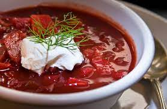

Ingredients
- 2 cups chopped fresh beets
- 2 cups chopped carrots
- 2 cups chopped onion
- 4 cups beef or vegetable broth
- 1 can (16 ounces) diced tomatoes, undrained
- 2 cups chopped cabbage
- 1/2 teaspoon salt
- 1/2 teaspoon dill weed
- 1/4 teaspoon pepper
- Sour cream, optional
Directions
- In a large saucepan, combine the beets, carrots, onion and broth; bring to a boil. Reduce heat; cover and simmer for 30 minutes.
- Add tomatoes and cabbage; cover and simmer for 30 minutes or until cabbage is tender. Stir in salt, dill and pepper. Top each serving with sour cream if desired.
Nutrition Facts
- 1 cup: 71 calories, 1g fat (0 saturated fat), 0 cholesterol, 673mg sodium, 14g carbohydrate (9g sugars, 4g fiber), 3g protein.